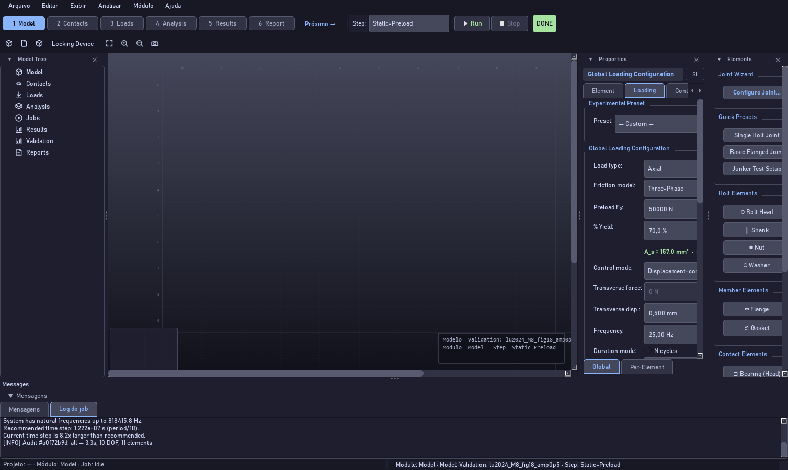
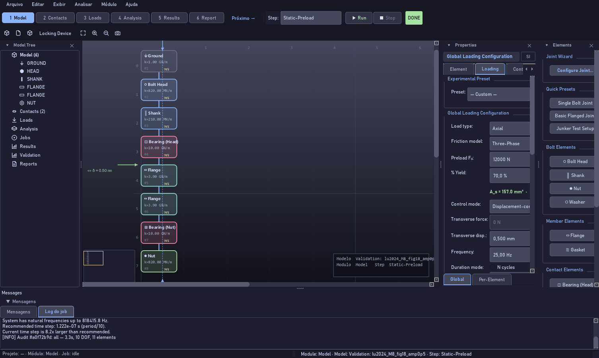
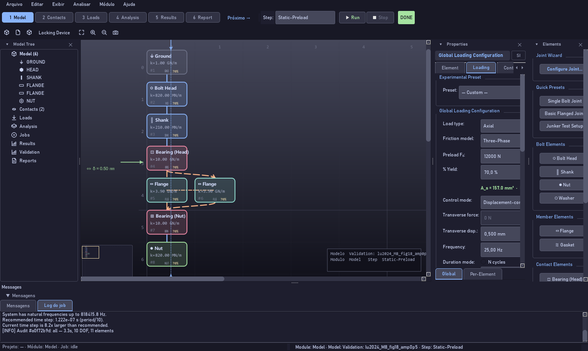
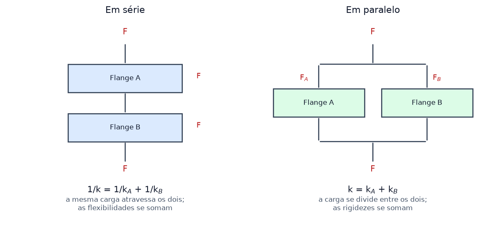
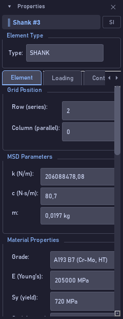

Construindo o seu primeiro modelo MSD
Bolt Analysis Studio 1.0.0 · Guia de uso narrado
Ouça a narração · voz: pt-BR-AntonioNeural






Transcrição
Vamos montar um modelo do zero. Em Arquivo, Nova análise, escolha modelo vazio: o viewport fica limpo. Da paleta à direita, acrescente os elementos na ordem em que a carga caminha. Comece pelo Ground, que é a fronteira fixa. Depois a cabeça, a haste, a ligação de apoio sob a cabeça, os membros apertados, a ligação de apoio sob a porca, e a porca. Oito elementos bastam para uma junta completa. Cada elemento tem duas coordenadas, no grupo Grid Position da aba Element. Row é a linha: a posição na série. Column é a coluna: o ramo paralelo. Elementos em linhas diferentes estão em série, um depois do outro, e a mesma carga atravessa todos; quem soma são as flexibilidades, então o inverso da rigidez do conjunto é a soma dos inversos. É por isso que, numa junta, o elemento mais macio manda: a gaxeta, se houver, domina. Elementos na mesma linha, em colunas diferentes, aparecem lado a lado: é o ramo paralelo. Aí a carga se divide entre eles e quem soma são as rigidezes. Duas chapas iguais lado a lado são duas vezes mais rígidas que uma. Agora a parte honesta, e é importante. Hoje a coluna muda o desenho e registra a sua intenção, mas o motor que o artigo validou combina a cadeia inteira em série: ele não lê a grade. Então, se você quer que dois membros realmente dividam a carga na conta, some as rigidezes deles num elemento só. O ramo paralelo no desenho serve para você e para quem lê o modelo enxergarem a topologia real da junta. Uma última regra, que decide se o modelo afrouxa: as duas ligações de apoio, sob a cabeça e sob a porca, precisam existir. É nelas que a face escorrega, assenta e desgasta. Sem elas a curva sai reta.
Cada controle desta tela
| Controle | O que faz |
|---|---|
| Arquivo → Nova análise… → Modelo vazio | Começa do zero, sem elemento nenhum. |
| Elements | A paleta. Cada botão acrescenta um elemento daquele tipo ao viewport. |
| Quick Presets | Atalho: monta uma cadeia inteira pronta, em vez de elemento por elemento. |
| Row (series) | A linha. Linhas diferentes são posições em série; a carga atravessa uma depois da outra. |
| Column (parallel) | A coluna. Mesma linha e colunas diferentes desenham um ramo paralelo lado a lado. |
| k (N/m) | A rigidez de cada elemento. Em série somam-se os inversos; em paralelo somam-se os valores. |
| Bloco no viewport | Mostra o nome, o k e a fração da carga. É a conferência visual de que a cadeia ficou como você quis. |
| Bearing (Head) / Bearing (Nut) | Obrigatórias. Sem as duas o modelo não afrouxa. |
| Fit / Shift+F | Enquadra a cadeia inteira depois de acrescentar elementos. |
Erro comum. Esperar que pôr dois elementos na mesma linha mude o resultado da análise. Muda o desenho, não a conta: o motor validado resolve a cadeia em série. Para dois membros dividirem a carga no cálculo, some as rigidezes num elemento só.